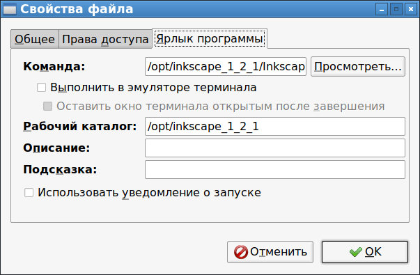

Даже в 2022 году в оконном менеджере LXDE не появилось вменяемого интерфейса для создания ярлыка запуска программы. Здесь описывается последовательность действий, с помощью которых ярлык запуска программы все-таки можно создать "с нуля". Как альтернатива, можно создавать файлы иконок на основе уже существующих файлов иконок, просто копируя *.desktop-файлы в каталоге /home/<Имя_пользователя>/Desktop под другим именем. Но тогда возникает вопрос: а как тогда создать самую первую иконку программы? Приведенные в этой статье действия отвечают на этот вопрос.
Итак, вначале надо кликнуть по рабочему столу правой кнопкой мыши и выбрать:
Создать новый - Пустой файл
В ответ появится окно, в котором надо задать имя файла. Это имя надо написать обязательно с расширением *.desktop, например:
МояПрограмма.desktop
Примечание. Следует помнить, что после создания поменять имя файла через интерфейс управления ярлыком будет невозможно. Хорошая новость состоит в том, что после настройки ярлыка имя файла ярлыка в LXDE будет не видно. В любом случае, лучше всего давать осмысленные названия файлам ярлыков. Изменить имя файла ярлыка можно при необходимости в консоли, переименовав файл ярлыка так, как нужно.
В результате выполнения действия по созданию файла, в каталоге /home/<Имя_пользователя>/Desktop будет создан файл с заданным именем. Однако этот файл будет пустой. Чтобы сделать его полноценным ярлыком, надо открыть его на редактирование, кликнув по нему правой кнопкой мыши, и в контекстном меню выбрать:
Открыть с помощью - Kate
Вместо Kate можно выбрать любой другой текстовый редактор.
Далее надо вставить в этот файл следующий текст:
[Desktop Entry]
Version=1.0
Encoding=UTF-8
Type=Application
Name=Название программы
Exec=Путь к запускаемому бинарнику программы
Path=Путь к рабочему каталогу запускаемой программы (можно не указывать)
Icon=Путь к файлу картинки иконки (можно не указывать)
Terminal=false
Categories=Utility;
После внесения изменений файл надо сохранить. Иконка ярлыка изменится. И LXDE поймет что это ярлык программы, о чем будет свидетельствовать новая вкладка в контекстном меню:
Свойства файла - Ярлык программы

Если иконка не была задана в опциях, то ее можно поменять. В Свойствах файла во вкладке Общие надо нажать на стандартную иконку (вместо стандартной может отображаться иконка с запрещающим знаком, свидетельствующая о том, что иконка не задана), и откроется окно диалога выбора иконки.
После вышеприведенных действий новая иконка будет запускать нужную программу.
Возможные проблемы
Если создать ярлык, который должен запускать bash-скрипт, то возможна ситуация, что ярлык не будет запускаться.
Этот текстовый файл «VPN-соединение», судя по всему является исполняемым скриптом.
Какое действие вы ходите выполнить?
[Выполнить] [Запустить файл в терминале] [Открыть] [Отменить]